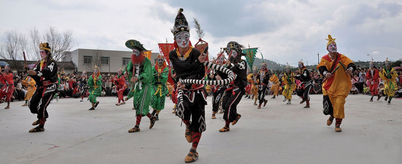
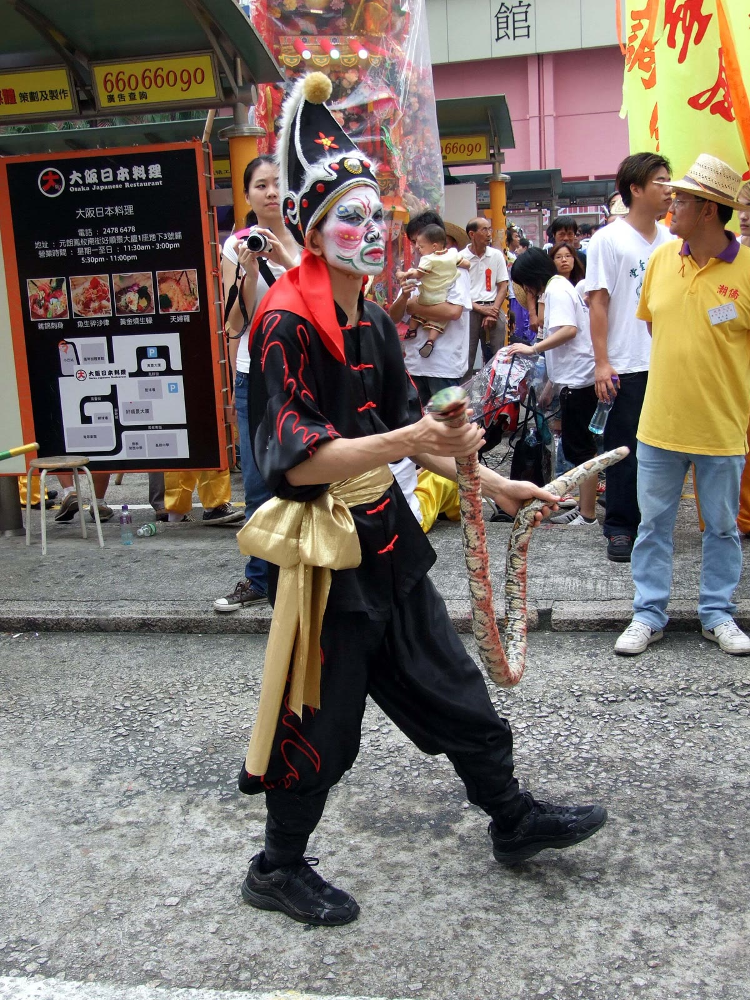

西域 · 新疆


 查看详情 · 图集与视频 →
查看详情 · 图集与视频 →
十二木卡姆
维吾尔族大型古典音乐套曲,集歌、舞、乐于一体,共三百六十首乐曲、四千四百九十二行歌词,被誉为"维吾尔音乐之母"。2005 年入选联合国教科文组织"人类口头和非物质遗产代表作名录"。
大漠的歌唱 · 海边的武舞 · 点击卡片查看图集与视频
维吾尔族大型古典音乐套曲,集歌、舞、乐于一体,共三百六十首乐曲、四千四百九十二行歌词,被誉为"维吾尔音乐之母"。2005 年入选联合国教科文组织"人类口头和非物质遗产代表作名录"。

潮汕地区流传四百余年的民间舞蹈,集武术、舞蹈、戏剧于一体,素有"北有安塞腰鼓,南有普宁英歌"之称。舞者勾画脸谱、手执双棒,锣鼓声起,队形开合如军阵。2006 年列入第一批国家级非物质文化遗产名录。




把两种非遗放在一起,我们看见了什么 · 点击任一卡片查看详解
木卡姆以歌唱抒发悲欢,一句旋律反复迂回、层层铺陈;英歌舞以武舞宣泄力量,双棒击节、吼声如雷——"大漠的歌唱,海边的武舞"。
点击查看详解木卡姆是大型套曲:琼乃额曼、达斯坦、麦西热甫环环相扣,一场演出如音乐长卷;英歌舞是锣鼓短循环的节奏推进,乐舞相绑,以整齐队形取胜。
点击查看详解木卡姆调式独特、旋律迂回、装饰音密集,如丝绸游走;英歌舞以五声锣鼓为主,重节拍、重力度——鼓点即发力,节奏为王。
点击查看详解麦西热甫围坐共舞,打破个体隔阂;英歌舞以宗族村落组队——殊途同归,以集体参与凝聚社群、传承集体记忆。
点击查看详解两者都没有绝对的"标准版本":口传心授、版本流动、允许即兴。每一次演出都是一次再创作,非遗因此保持鲜活。
点击查看详解民俗场景萎缩、年轻人接触少、传承人老龄化——共同的考题,也让记录与传播成为这一代人的责任。
点击查看详解